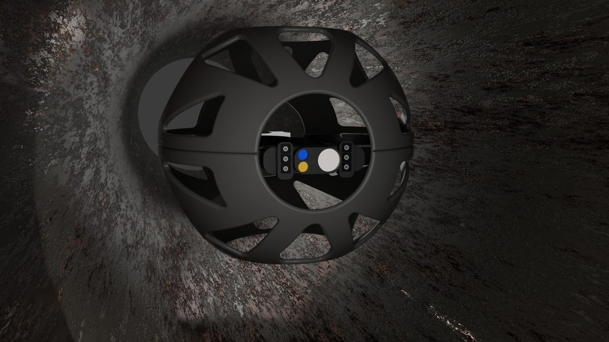
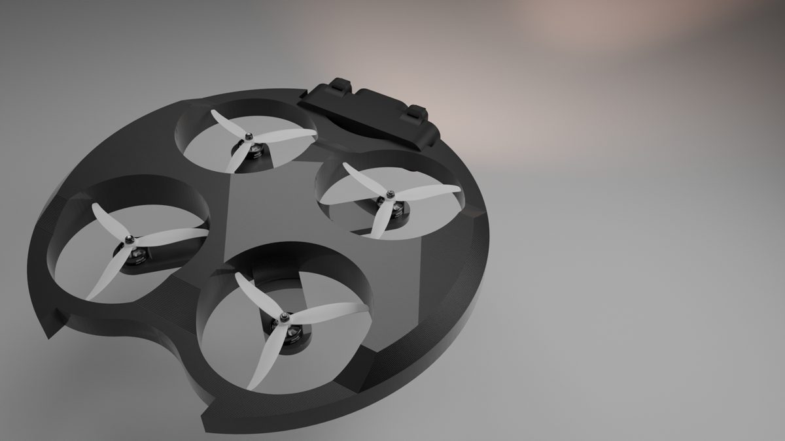
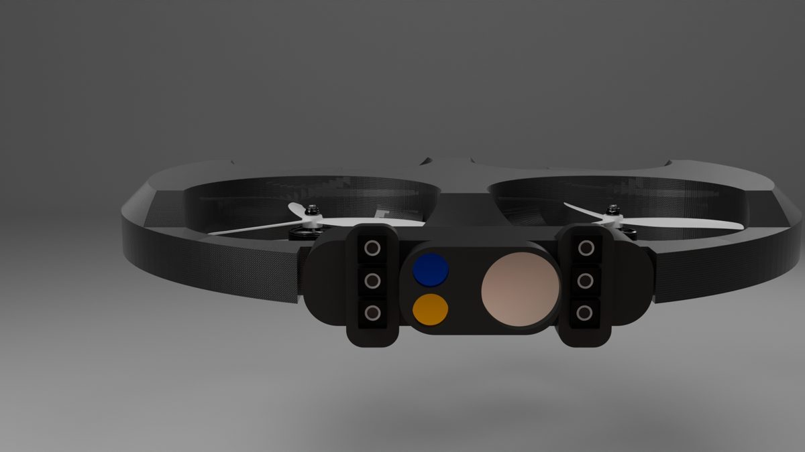
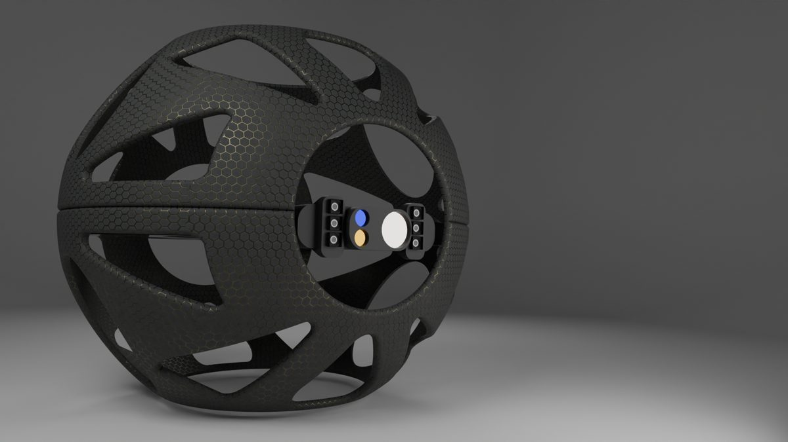

Sheet M-01 · Pi Robots Technology, Mumbai
Pipe-inspection quadcopter
A drone that flies inside confined pipelines and films the walls.
As Lead Design Engineer I owned the mechanical side of the drone: body, frame and accessories, from first sketch to released drawings. Inside a pipe there's no GPS and the airframe will hit the wall, so protection drove most decisions. The ducts keep all four props inside the disc, so contact with the wall doesn't foul a blade.
- Designed a carbon-fiber protective chassis with ducted rotors and a honeycomb-lattice guard.
- Packaged brushless motors, a dual visible/infrared camera and lighting into a compact payload bay with defined interfaces.
- Released 2D drawings for manufacturing and kept the BOM at 100% component traceability.
- Ran hands-on build, assembly and test cycles, then worked root cause with manufacturing to cut rework.
RoleLead Design Engineer
ToolsSolidWorks, AutoCAD
MethodsDFM, design for reliability, root cause analysis
DatesMay 2024 – Jun 2025
Prototype iteration time cut by 25% through process changes in the build-test loop.




MaterialCarbon fiber
Drawn inSolidWorks
StatusReleased
SheetM-01 / 05